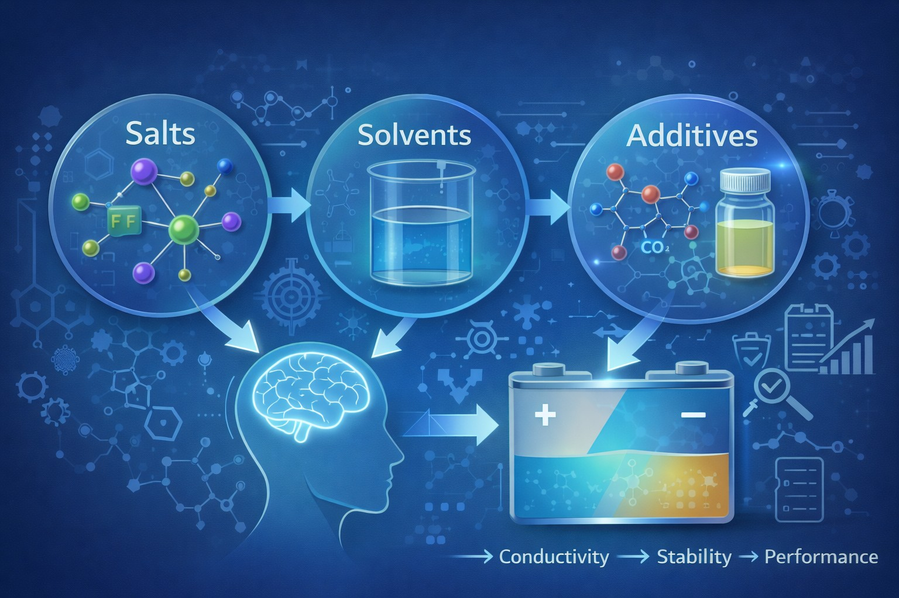
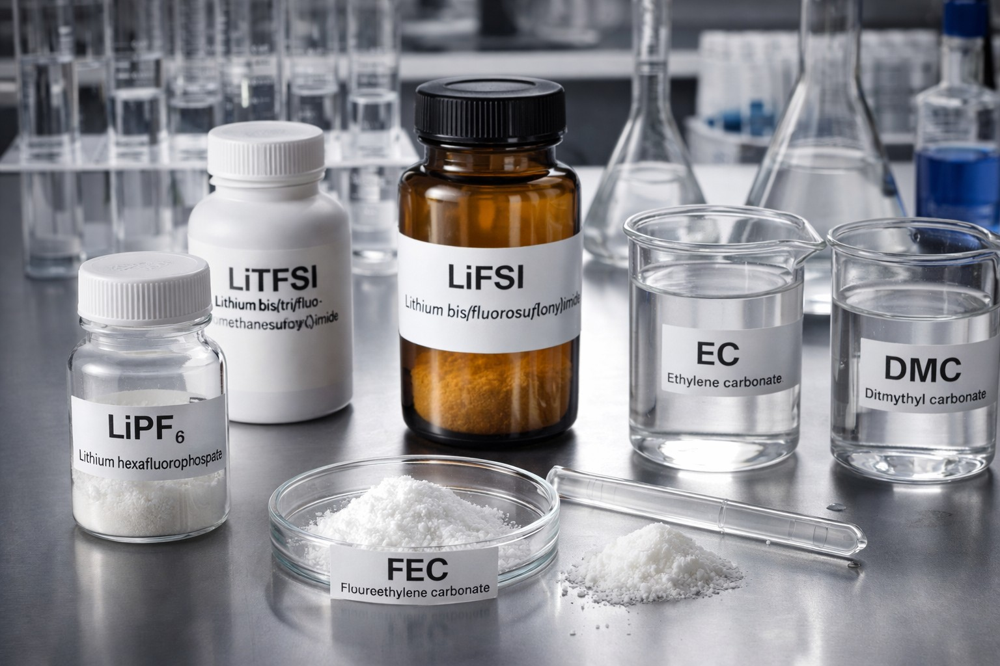
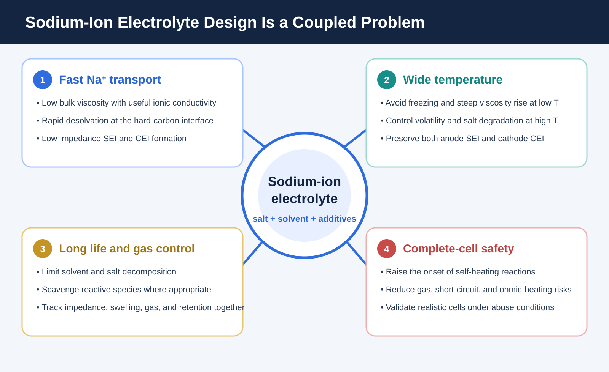
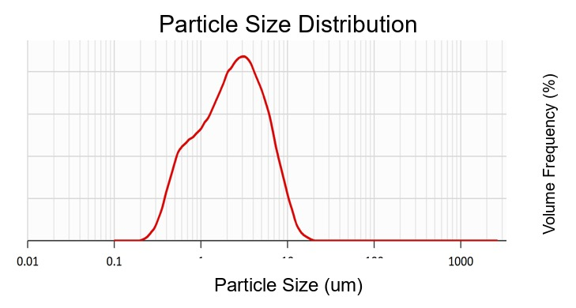
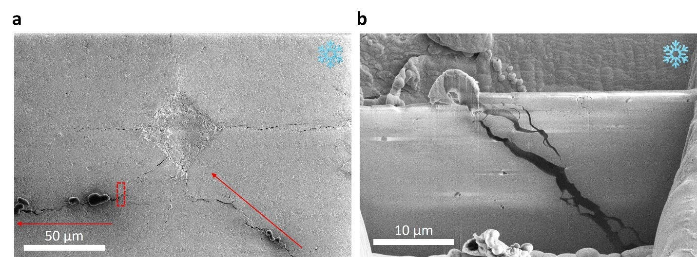
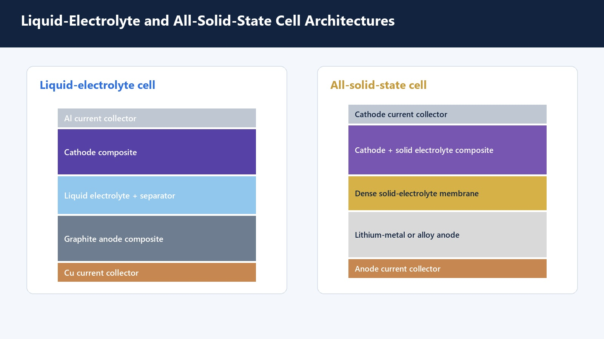
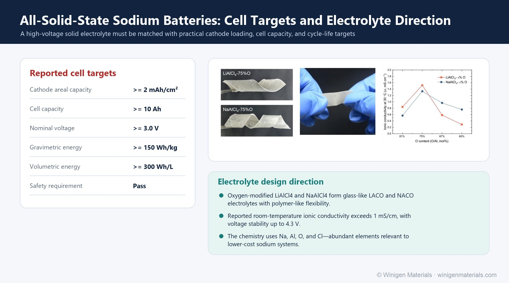
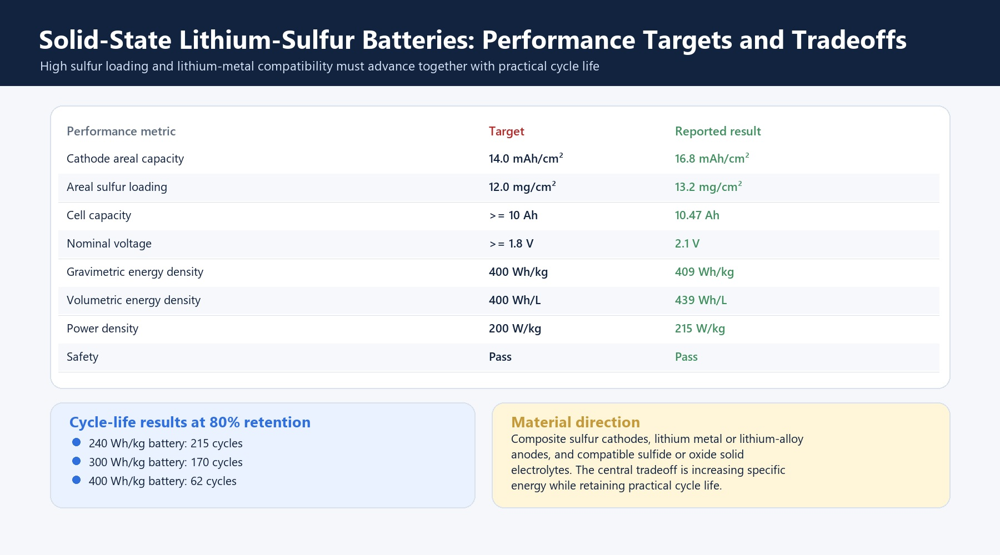
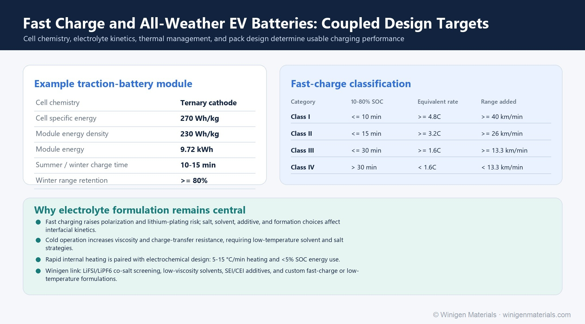
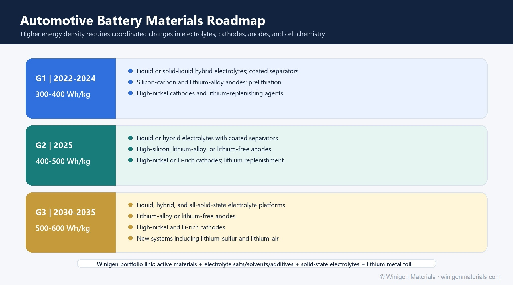

Electrolyte Additive Screening for Silicon Anodes and High-Voltage Cathodes
Screen FEC, VC, lithium phosphate, nitrile, sulfur, and phosphorus additives by interphase chemistry, gas, impedance, cross-talk, temperature, and full-cell failure mode.
Technical articles connecting electrolyte chemistry, solid-state and hybrid battery architecture, active materials, interfaces, fast charging, manufacturing, and practical cell-development workflows.
Screen FEC, VC, lithium phosphate, nitrile, sulfur, and phosphorus additives by interphase chemistry, gas, impedance, cross-talk, temperature, and full-cell failure mode.

Learn why LiFSI is used in lithium-metal, fast-charge, low-temperature, and high-concentration battery electrolytes, including interphase formation, current-collector compatibility, and formulation strategy.

Compare LiPF6, LiFSI, and LiTFSI for lithium-ion, lithium-metal, fast-charge, low-temperature, polymer, and specialty electrolyte development.

Low-temperature electrolyte design considerations for solvent viscosity, salt selection, lithium plating risk, ionic conductivity, desolvation, and cold-climate battery testing.

Learn how sodium salts such as NaPF6, NaTFSI, and NaODFB, along with solvents, additives, and water control, affect sodium-ion battery electrolyte performance.

Connect sodium-ion transport, solvation, hard-carbon interphases, water control, gas suppression, temperature response, and complete-cell safety in one screening framework.
Compare sulfide, oxide, halide, polymer, and hybrid solid-state electrolyte materials for battery development, including ionic conductivity, particle size, moisture sensitivity, and interface compatibility.

Review a practical screening workflow that connects powder specifications, pellet conductivity, moisture control, composite-electrode compatibility, interface testing, and pilot-scale validation.

Compare sulfide, oxide, and halide solid electrolytes for battery development, including conductivity, moisture sensitivity, high-voltage compatibility, processing route, and interface behavior.
Learn how to compare solid-state electrolyte powders using ionic/electronic conductivity, D10/D50/D90, pellet preparation, moisture, XRD, SEM, and interface testing.

Review what a 2026 Nature study on LLZTO reveals about hydrostatic stress, grain-boundary weakness, fracture paths, engineered defects, and lithium-metal interface testing.

Compare transport, wetting, pressure, durability, thermal behavior, composite electrodes, interfaces, materials, and manufacturing across hybrid and all-solid-state architectures.

Review sodium solid electrolytes, halide and composite concepts, flexible films, interface stability, moisture control, and practical screening priorities.

Explore sulfur loading, composite cathodes, lithium metal, solid-electrolyte selection, pressure, interface stability, and practical cell-level metrics.

Learn how electrolyte transport, lithium plating, low-temperature kinetics, internal heating, thermal management, and charging protocols interact.

Follow the transition from liquid cells to hybrid and commercial solid-state batteries, including interfaces, mechanics, manufacturing, cost, pilot validation, sodium-ion, and lithium-sulfur.